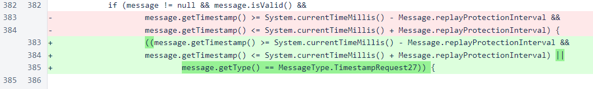
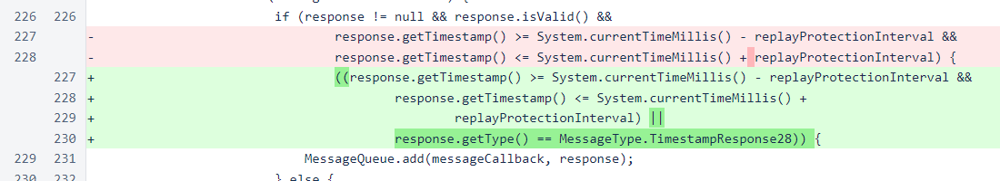
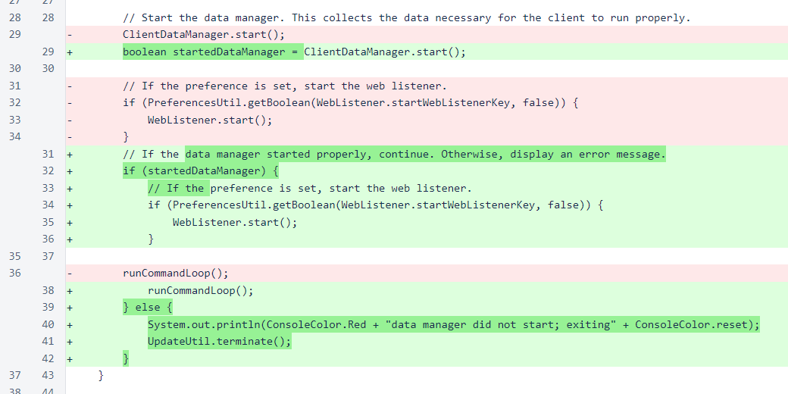
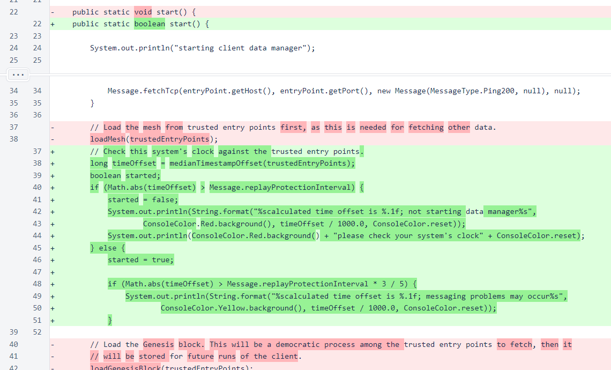
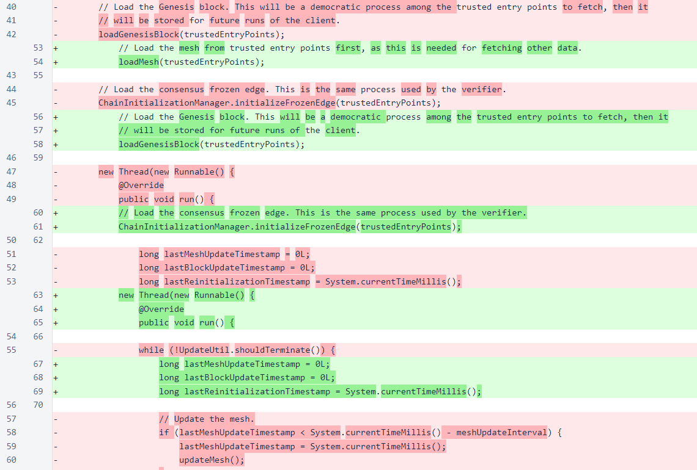
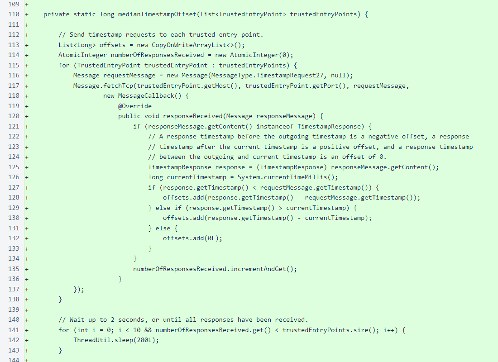
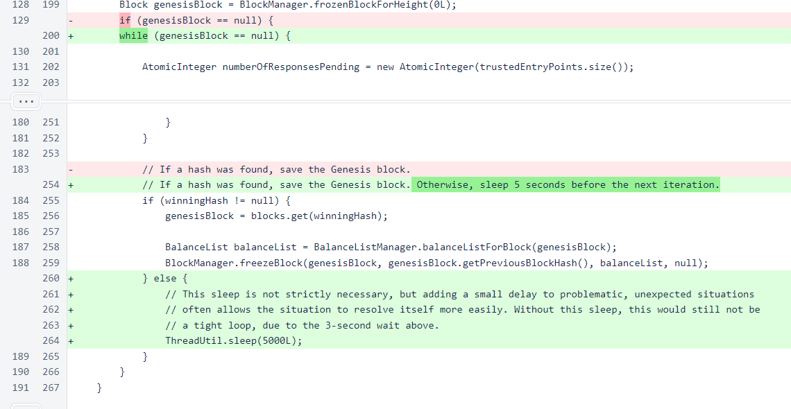
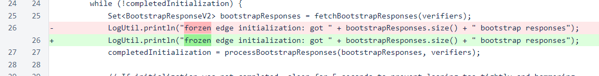

Nyzo version 556 (commit on GitHub) improves the client initialization process.
This version primarily affects the client. If you are running verifiers that you use as trusted entry points for the client, updating those verifiers to this version will improve client support.
In MeshListener, messages of type TimestampRequest27 are now accepted even if they have incorrect timestamps. These messages respond with nothing other than the current system's timestamp, and they have no side effects.
Symmetrical to the MeshListener change, the Message class now accepts responses of TimestampResponse28 with incorrect timestamps.
In the initialization of Client, a new boolean return value from ClientDataManager.start() is used to determine whether to complete initialization or prematurely terminate. If the ClientDataManager finds that the client system's clock is too far from the median clock of the trusted entry points, the ClientDataManager refuses to start, because it will be unable to communicate properly with the mesh.
In the ClientDataManager.start() method, the median timestamp offset to the trusted entry points is checked. If this offset is outside the message replay interval, the initialization process does not continue. If the offset is close to the message replay interval, a warning is presented.
The remaining changes in the start() method are indentation changes due to the new level of conditional nesting.
The medianTimestampOffset() method sends TimestampRequest27 messages to all trusted entry points. It then waits up to 2 seconds, in 0.2-second increments, for the responses to return.
The median of the timestamp offsets is returned. If no valid timestamp responses are returned, then a value of 0 is returned.

In the loadGenesisBlock() method, the condition that fetches the Genesis block in the absence of a local copy is now a loop. This will allow the ClientDataManager to initialize properly even if the first attempt to fetch the Genesis block is unsuccessful.
In SentinelUtil, a misspelling was corrected. Thank you to @Booker#1170 on Discord for noting this.
